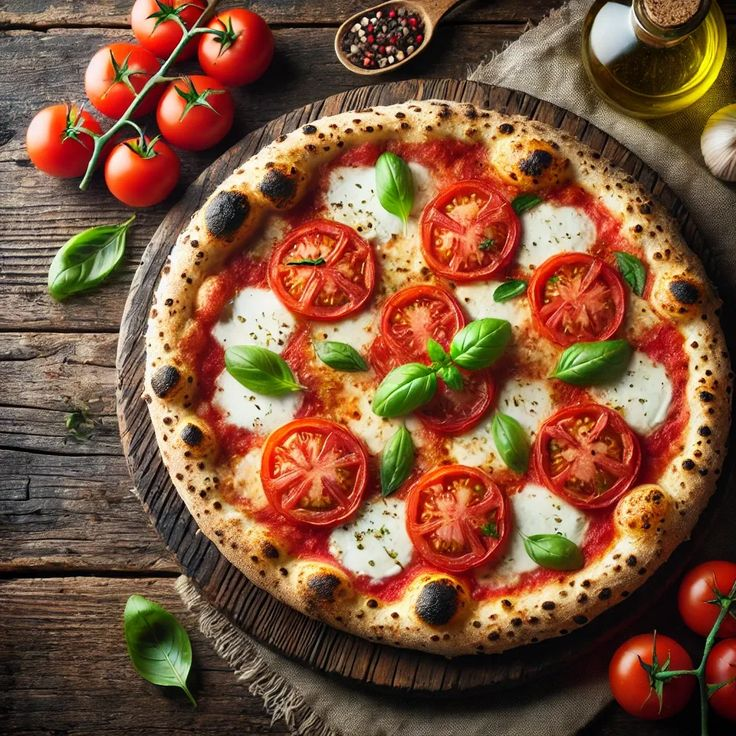

Margherita Pizza

Description:
A classic Italian pizza with simple, fresh ingredients highlighting the flavors of tomato, mozzarella, and basil.
Ingredients:
- Pizza Dough(store-bought or homemade)
- Tomato Sauce(½ cup – preferably San Marzano tomatoes, blended with salt & basil)
- Fresh Mozzarella Cheese(150g, sliced or torn)
- Fresh Basil Leaves(a handful)
- Extra Virgin Olive Oil(1 tbsp)
- Salt(to taste)
- Optional:Grated Parmesan cheese & black pepper
Steps:
- Preheat Ovento the highest temperature (ideally 475°F/250°C or higher) with a pizza stone or baking tray inside.
- Roll the Doughinto a thin round base (~12 inches).
- Spread Tomato Sauceevenly, leaving a small border for the crust.
- Add Mozzarellain even pieces over the sauce.
- Bakefor 8–12 minutes until the crust is golden and cheese melts.
- Top with Basil,drizzle with olive oil, and add salt/pepper if needed.
- Slice & Serveimmediately.
Enjoy your authentic Margherita pizza! 🍕🇮🇹
Home